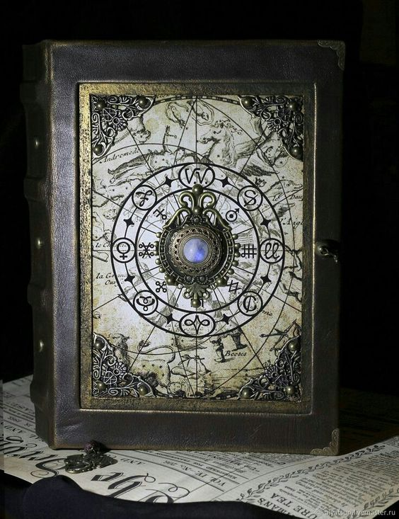

Fique Por Dentro de Tudo no Mundo Geek!
Lançamento Aguardado: Novo Livro do Autor Geek Best-Seller
Desde o anúncio de seu próximo lançamento, a comunidade geek está em polvorosa. O renomado autor, conhecido por suas obras que mesclam fantasia, ficção científica e elementos da cultura pop, está prestes a brindar seus leitores com mais uma obra-prima literária. Com uma legião de fãs ávidos por suas narrativas envolventes, o novo livro promete transportar os leitores para mundos além da imaginação, repletos de aventuras épicas e personagens cativantes.
O autor, cujo nome já se tornou sinônimo de qualidade e originalidade no universo geek, é reconhecido por sua habilidade em criar cenários ricamente detalhados e tramas que mantêm os leitores grudados às páginas de seus livros. Desde o lançamento de seu primeiro sucesso, ele tem conquistado corações e mentes de fãs ao redor do mundo, estabelecendo-se como um dos principais nomes do gênero.
No entanto, o lançamento de seu novo livro traz consigo uma expectativa ainda maior. Afinal, após o sucesso estrondoso de suas obras anteriores, os fãs estão ávidos por descobrir o que o autor reservou para eles desta vez. A especulação está no ar, com teorias e palpites sobre o enredo e os personagens circulando freneticamente nas redes sociais e fóruns especializados.
O autor, mantendo-se fiel ao seu estilo único, tem sido bastante discreto quanto aos detalhes de sua nova obra. Pouco se sabe sobre o enredo, o universo em que se passa a história ou mesmo os protagonistas que conduzirão os leitores nesta jornada épica. No entanto, essa aura de mistério só parece aumentar o interesse dos fãs, que aguardam ansiosamente por cada pequena pista ou teaser divulgado pelo autor.
Além da trama empolgante e dos personagens cativantes, o novo livro promete trazer consigo uma reflexão mais profunda sobre temas relevantes da atualidade, sem perder a essência do entretenimento que conquistou tantos admiradores ao longo dos anos. Com sua capacidade única de abordar questões complexas de forma acessível e envolvente, o autor busca mais uma vez surpreender e encantar seus leitores.
O lançamento do novo livro do autor best-seller geek não é apenas um evento literário, mas sim um verdadeiro acontecimento cultural. A expectativa é palpável, e os fãs contam os dias, as horas e os minutos para finalmente mergulharem nas páginas desse universo extraordinário que só o autor é capaz de criar. E, enquanto o grande dia não chega, o mundo geek aguarda com fervor, ansioso por mais uma aventura inesquecível nas mãos de um mestre da imaginação.